Nine tournaments are tables. The result of the two-day Classic (November 7 and 8) is three pictures on the old page, shown here as they are.
2020 club tournaments
9 tournaments with results. Pick a date for the full result.
2020 CCBM Tournament Results and Standings
Tournament Rules Tournament Rules
2020 Club Tournament Results
CCBM Tournament #1
May 23, 2020- North East River
A long wait to do this little thing we love called Fishing but we finally got our first tx in the books for 2020.
When you talk about destroying the field it looks like this as the winner beats the nearest finisher by nearly 6 lbs. A new member but not new to the club takes a 2nd place finish in his first club tx while last year's ROY takes a 3rd place finish and other awards.
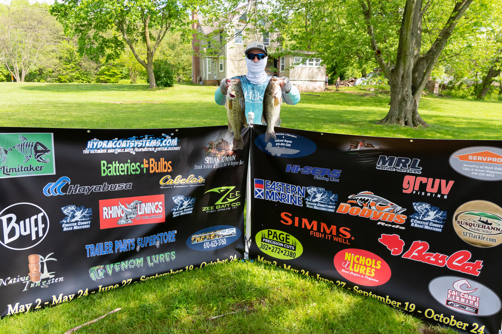
Mark Ely starts the season with a big bag of largemouth. When many other anglers were catching good fish, he was catching fatties! His bag goes 17.65 lbs and takes an early lead in the AOY standings.
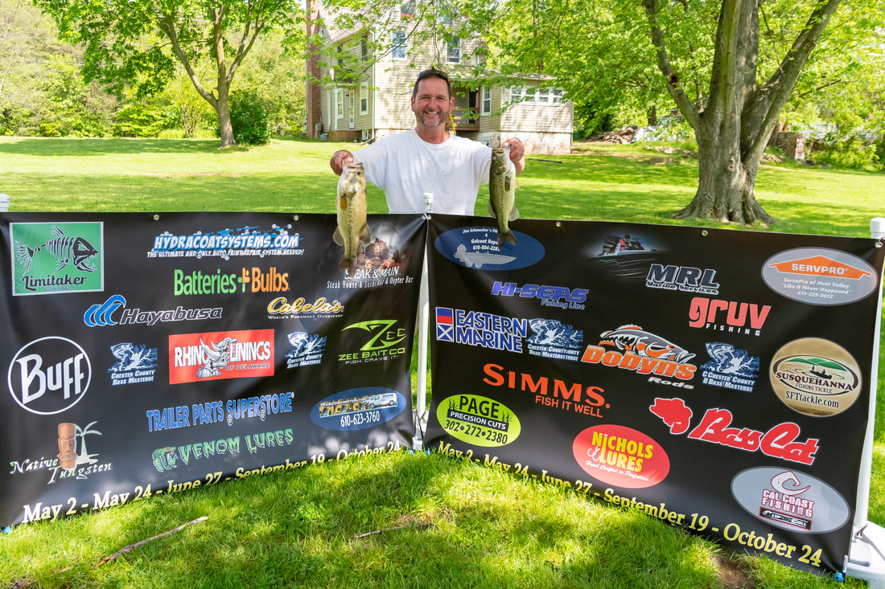
Paul Sirochman walks in the door and walks out 2nd on the AOY standings leaderboard. Paul just misses his limit and weighs in 11.71 lbs. With 3 other anglers within 1.25 lbs of him, Paul makes it through his first tx in great shape.
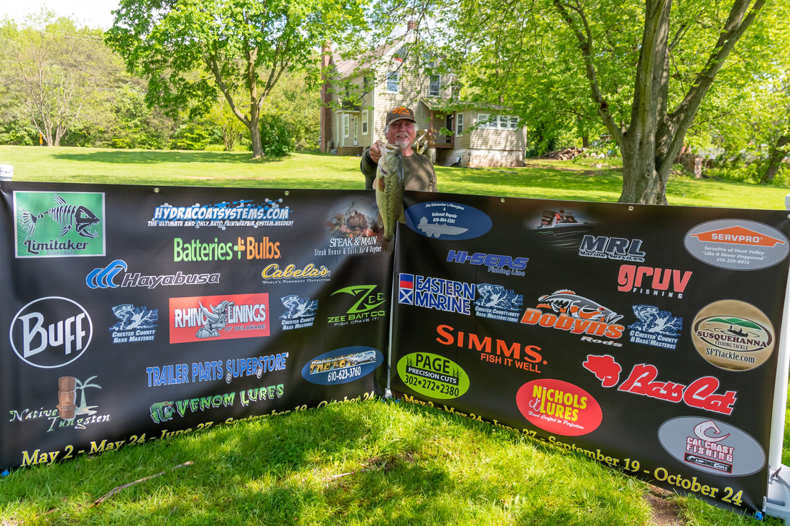
Steve Manista picks up where he left off in 2019 when he won Rider of the Year and takes 3rd today. His weight of 11.59 lbs included the day's lunker. That Lunker weighs 5.90 lbs and also took the club's rolling lunker pot that was unclaimed since this time last year.
May 23, 2020
North East River
- Total Anglers: 20
- Total Fish Weight: 111.35
- Total Fish Weighed: 36
- Average Fish Weight: 3.09
- #Fish/Angler: 1.80
- /Angler: 5.57
STEVE MANISTA 5.90 lbs ROLLING LUNKER!!
Average
Average Weight
CCBM Tournament #2
June 13, 2020- North East River
So far 2020 has started out completely different than last year as we have a different winner and completely new top 3 finishers in tx number 2.
AOY standings so far are very tight going into tx 3.
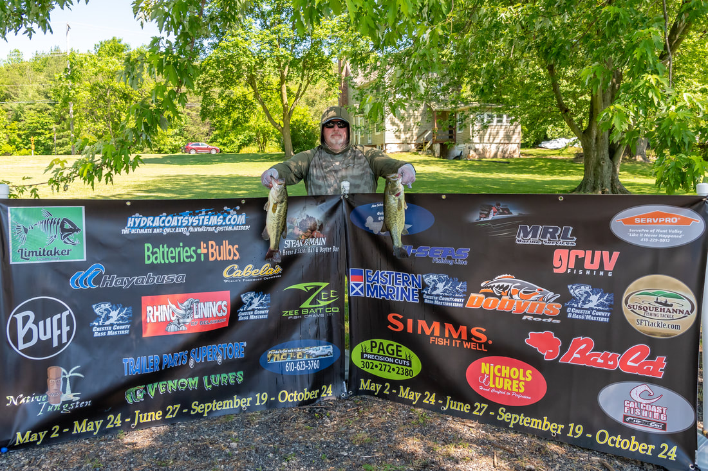
Stan Horne takes advantage of the blown out tide to take the win. He focused on areas that had the deepest water near spawning areas to catch the most and biggest Bass!
His bag of 16.57 lbs of bass bested the next closest angler by over 2 lbs!
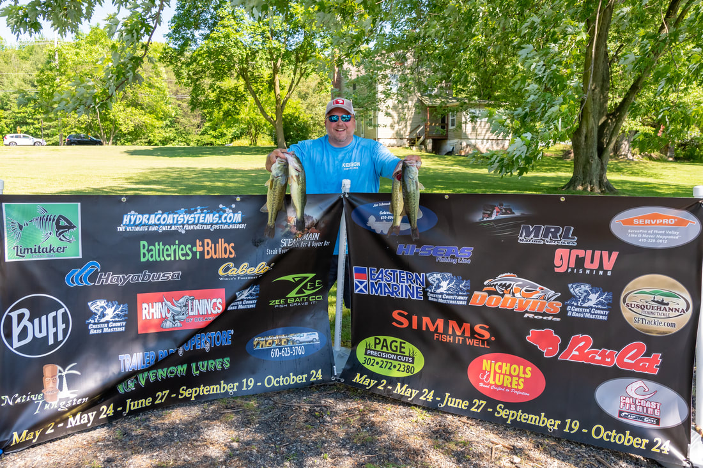
Rick Mullen, after expressing the desire to be more consistent on the Upper Bay, follows up a good day on the bay last week with a 2nd place finish a week later.
Rick's limit of bass weighs 14.26 lbs as he hopes to continue to improve going forward and make the club's prestigious top 6.
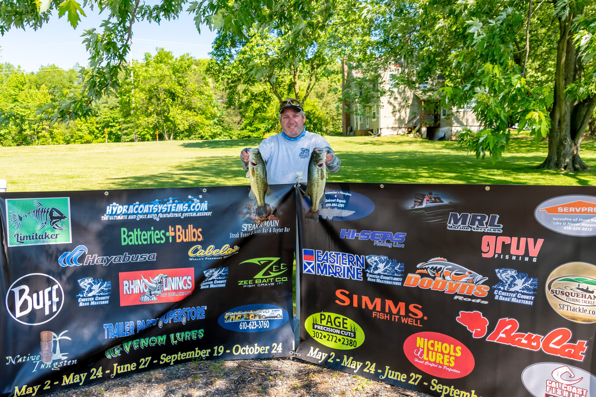
Sean Geerlof takes 3rd place after taking advantage of a early bite, getting 3 in the box by 8am.
His bag of largemouth weighed in at 13.11 lbs with 3 other anglers right behind him within less than 1 lb of him.
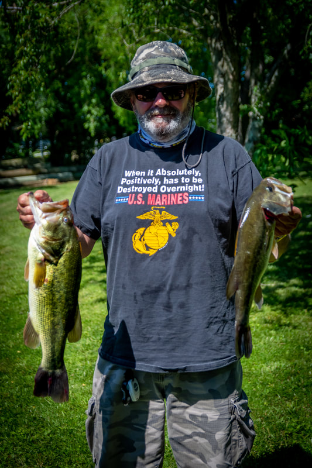
In a day when bigger fish were hard to find, George Waeckel lands a Upper Bay Fattie! His 4.77 lb bass gave him Lunker for the day.
June 13, 2020
North East River
- Lunker: George Waeckel: 4.77 Lbs.
- Total Anglers: 23
- Total Fish Weight: 129.83
- Total Fish Weighed: 50
- Average Fish Weight: 2.60
CCBM Tournament #3
July 11, 2020- Nanticoke River
Dealing with some high water lead to a tough bite but left our winning angler in a position for some last second heroics.
Our 2nd place angler also caught a few late fish to jump him into the top 3 while the 2nd runner up takes advantage of an early bite to carry him into the points.
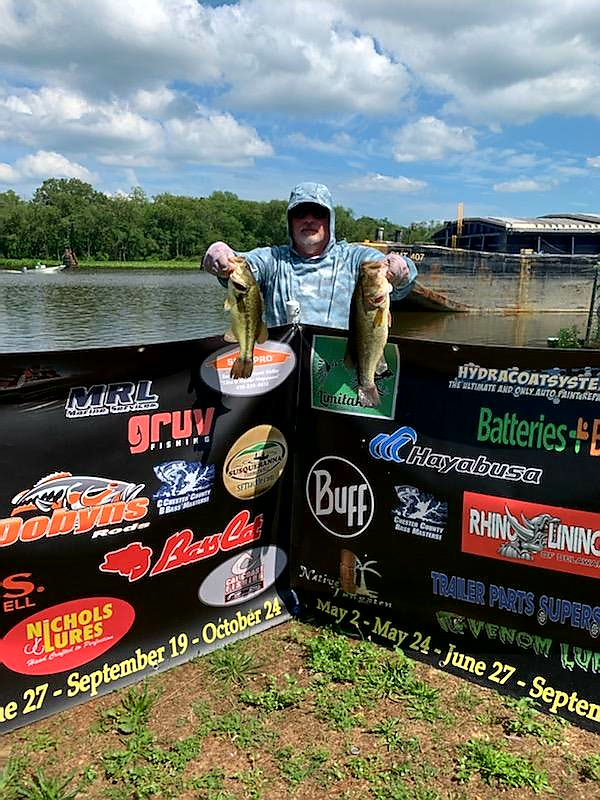
Stan Horne makes it two tournaments in a row with another win!! With most anglers having fished one more tx than him, he finds himself in 11th place but, once he fishes his 7th scorable tx, we expect him to be near the top, if not leading the AOY race, if he continues to load the boat.
With high water and a tide that did not want to go out, Stan waited until the last second to allow the tide to start heading out and ran to some deep water pads where he know the bass would set up perfectly for a late day bite. His bag of largemouth weighs in at 10.78 lbs which was anchored by the day's Lunker that weighed 3.98 lbs!!
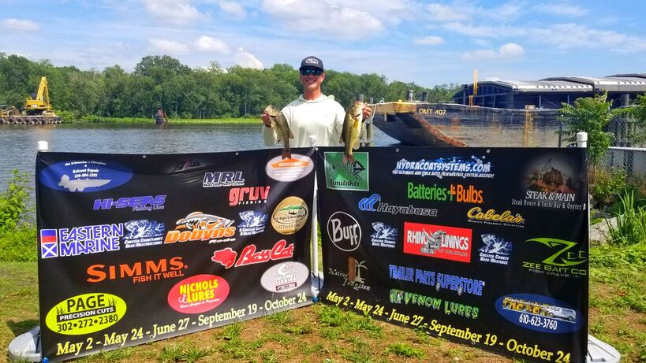
Another angler that took advantage of a late day bite was Stephan Sirochman. Largemouth went on a late day binge and Stephan found himself on the right spot and got his bait in front of several good-sized largemouth.
Stephan's bag weighs in at 7.74 lbs and jumps him into 2nd place for the day.
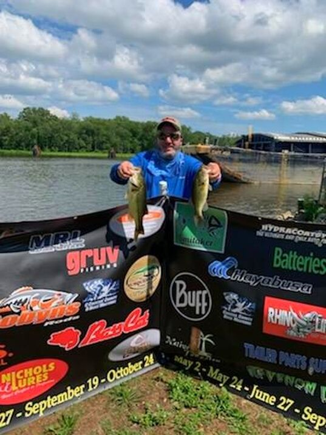
Sean Geerlof takes 3rd place again which makes it 3 txs in a row where he finishes in the top 4. This puts him in the lead for AOY for the moment but he realizes he has to turn 3rd place finishes into wins if he hopes to stay atop of the AOY leaderboard.
Sean's bag weighs in at 6.95 lbs.
July 11, 2020
Nanticoke River
- Lunker: STAN HORNE 3.98 lbs
- Total Anglers: 17
- Total Fish Weight: 60.99
- Total Fish Weighed: 33
- Average Fish Weight: 1.85
* dead fish
CCBM Tournament #4
July 25, 2020- Wicomico River
The day started out with one angler's trailer suffering a tire blow out on the way to the ramp, leading to a late start but all worked out perfectly for our winner.
A 2nd year boater takes his first top 3 on unfamiliar water, while a new member continues to impress.
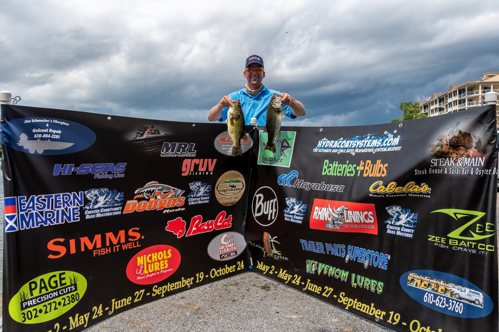
Tom Yaw takes his first win as a member of CCBM. An early bite kept Tom's confidence high throughout the day and paid off big. With 3 big bites weighing in at 9.29 lbs, Tom makes a big jump up the leaderboard with an impressive win.
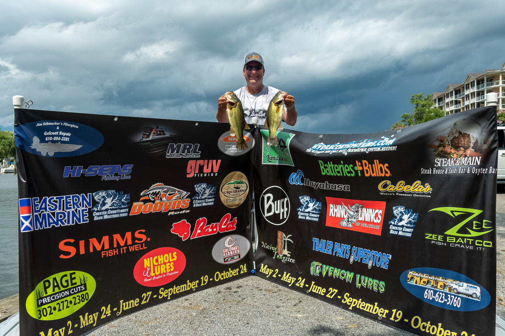
Tom Wood takes home a 2nd place finish on a body of water that we don't normally fish. Tom is looking forward to stringing together a few good finishes on a shortened season. Tom weighed in 4 fish for 8.39 lbs and takes 2nd place points.
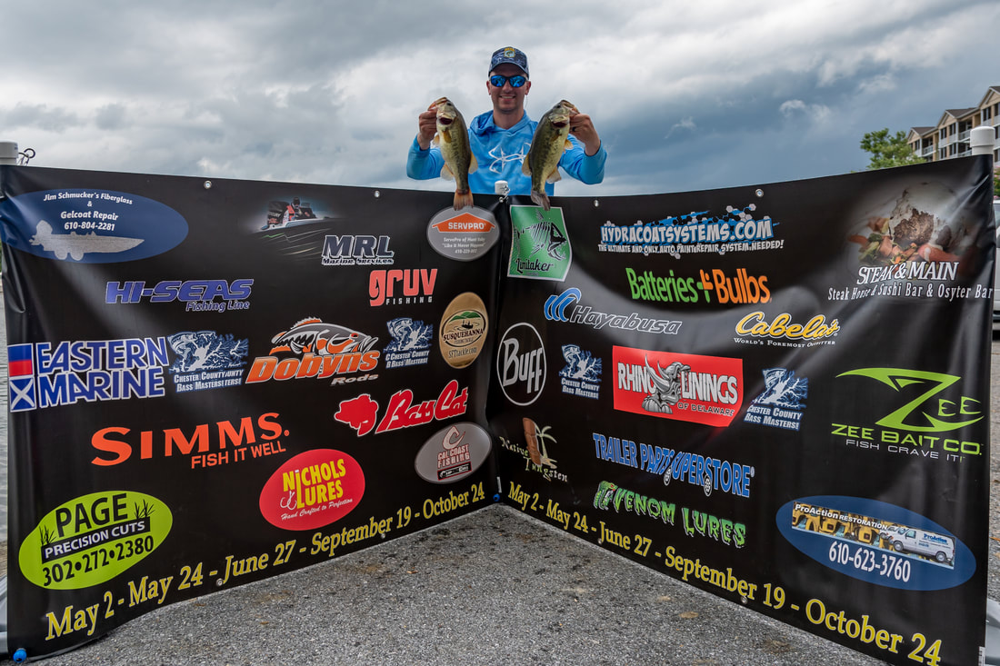
JC Henry takes his 3rd top 4 finish in 4 txs. Finding a small honey hole up river, he ground out his last 3 fish. JC's 4 fish weigh in at 6.76 lbs and take some important 3rd place points in what promises to be a tight race for Rider and Angler of the Year!!!
Mark Ely did not catch numbers but he did get some size. His one fish weighed 3.68 lbs and was enough for him to claim the lunker and 5th place.
July 25, 2020
Wicomico River
- Lunker: Mark Ely 3.68 lbs
- Total Anglers: 25
- Total Fish Weight: 49.93
- Total Fish Weighed: 23
- Average Fish Weight: 2.17
CCBM Tournament #5
August 8, 2020- Nanticoke River
One angler keeps dominating while riders keep ROLLING!!!
Once again, on a day where tides were higher than usual after storms rolled through the area during the week, anglers take advantage once the tide rolled out.
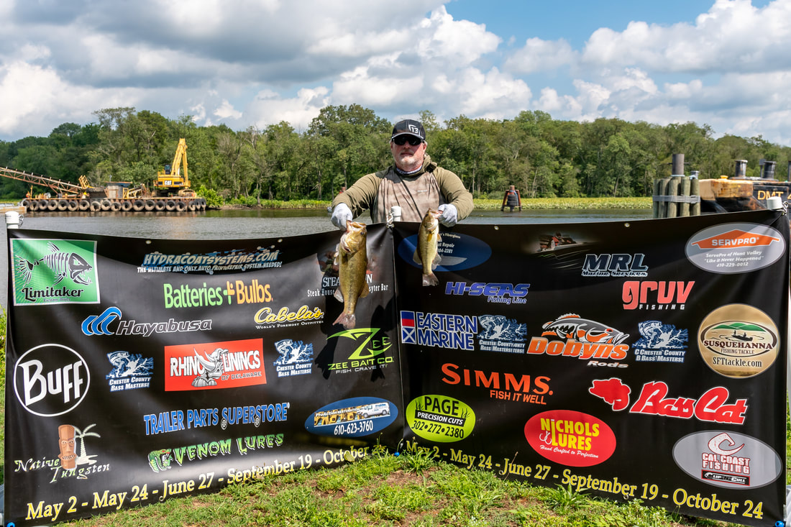
Stan Horne makes it 3 wins in 4 tournaments as he looks to claim another AOY.
Stan has a record setting day as he lands the largest bag weighed in for our club on the Nanticoke River. His limit of Bass that weighed 12.84 lbs included the day's lunker that goes 4.60 lbs
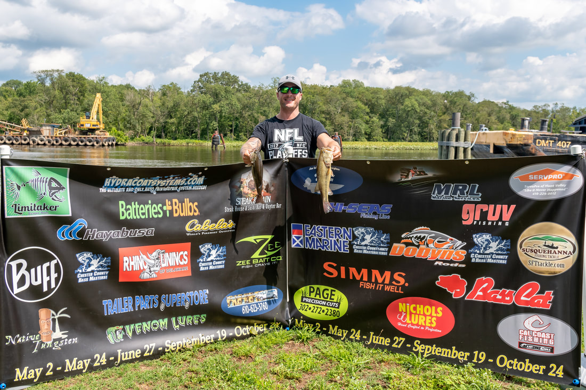
Ryan Sweeney has a hell of a day on the back of the boat. He caught 4 fish on a day when bites where hard to come by. Those 4 fish weighed 6.01 lbs. This is his 2nd top 3 finish and looking for #3.
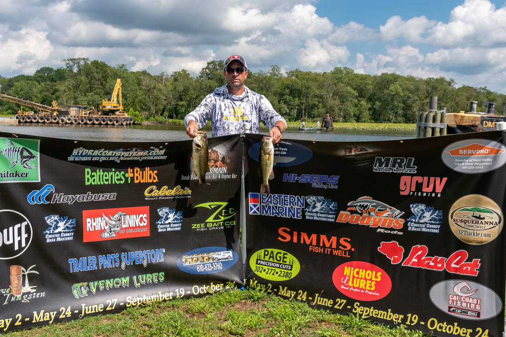
Jim Pro is having a sneaky good year. Finishing in 3rd today gives him 2 top 4 finishes in 4 tournaments. His bag weighs in at 4.68 lbs giving him 93 points going into the next tx on the Conowingo.
August 8, 2020
Nanticoke River
- Lunker: Stan Horne 4.60 lbs
- Total Anglers: 20
- Total Fish Weight: 54.94
- Total Fish Weighed: 35
- Average Fish Weight: 1.57
CCBM Tournament #6
August 22, 2020- Conowingo Reservoir
One angler keeps dominating while riders keep ROLLING!!!
Same headline as last tournament as the theme for 2020 stays the same.
Rolling lunker pot takes a hit as a 3.50 + Smallie hits the scales. Riders take 2 of the 3 top spots as one rider makes it two 2nd place finishes in a row.
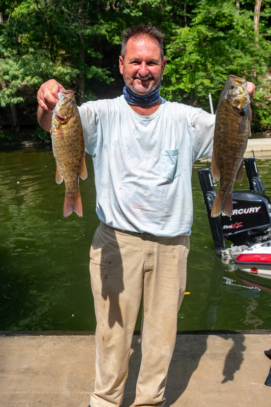
Paul Sirochman joins the club and immediately has an effect AOY Standings . Not only does he come in and take a 2nd place finish in his first tx but follows it up several txs later with a BIG win!!
Paul takes the Trifecta by winning the day's Lunker, the win and the Rolling Lunker!
His bag weighs in at 11.10 lb which included a 4 lb SLOB Smallie!!!!
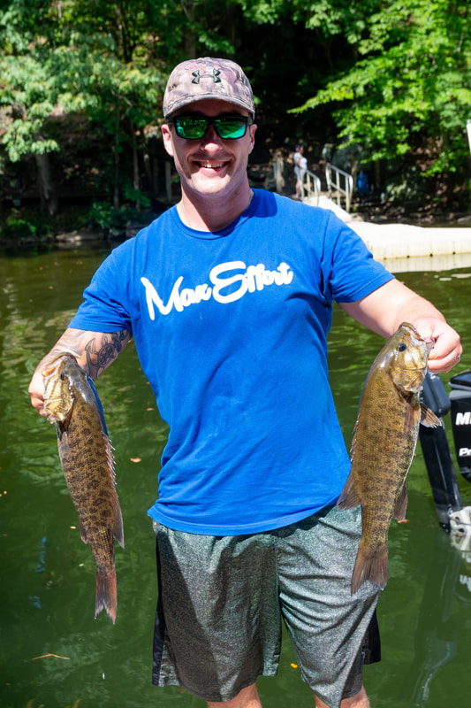
Once again Ryan Sweeney has a hell of a day on the back of the boat. He caught 4 fish for 8.43 lbs on a day when bites where hard to come by. Obviously one boat was around the fish. Ryan's boater takes first as he takes a 2nd place and was one decent bite away from a possible win.
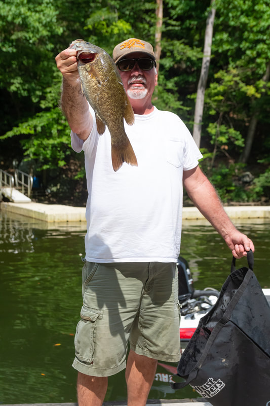
Steve Manista uses his experience as a boater to take a 3rd place finish as a rider. Unfortunately he only had 1 good bite but it was enough to give him important AOY points with only 4 txs left. His thick Smallie weighs in at 2.64 lbs on a tough day.
August 22, 2020
Conowingo
- Lunker: Paul Sirochman 4.00 lbs
- Total Anglers: 19
- Total Fish Weight: 32.45
- Total Fish Weighed: 18
- Average Fish Weight: 1.80
*dead fish penalty
CCBM Tournament #7
September 12, 2020- Nanticoke River
Yes Tom Yaw.... Riders Keep on Rolling!!!!
3-time AOY doing well with limited time on the water in a short season . Second-year member making a tough year better with three top 3 finishes.
Great day overall as well, as almost 70 fish brought to the scales with an AFCPA(Average Fish Caught per Angler) at the 3 fish mark.
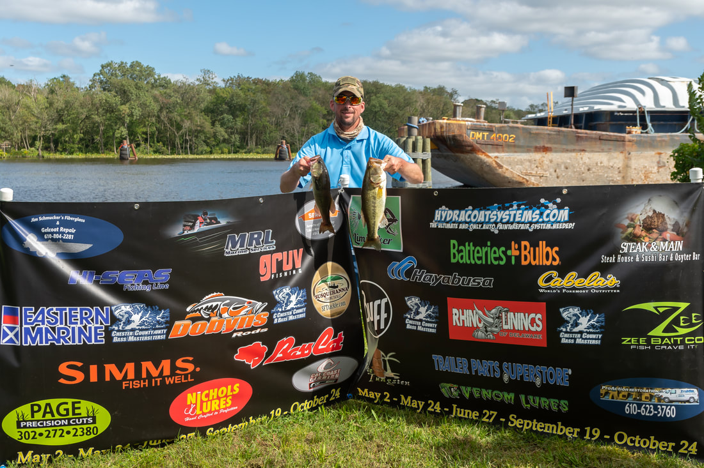
Tom Yaw is having a career year and looking to add to his domination with eyes not only on the Rider of the Year but also the Angler of the Year as well.
Tom's limit of bass weigh in at 11.13 lbs and was anchored by the day's Lunker that weighed in at 3.61 lbs. This gives him 2 wins as a rider which has not been done in the History of the Chester County Bass Masters! He also has himself a top 6 bag in the club on the Nanticoke River.
Congrats!
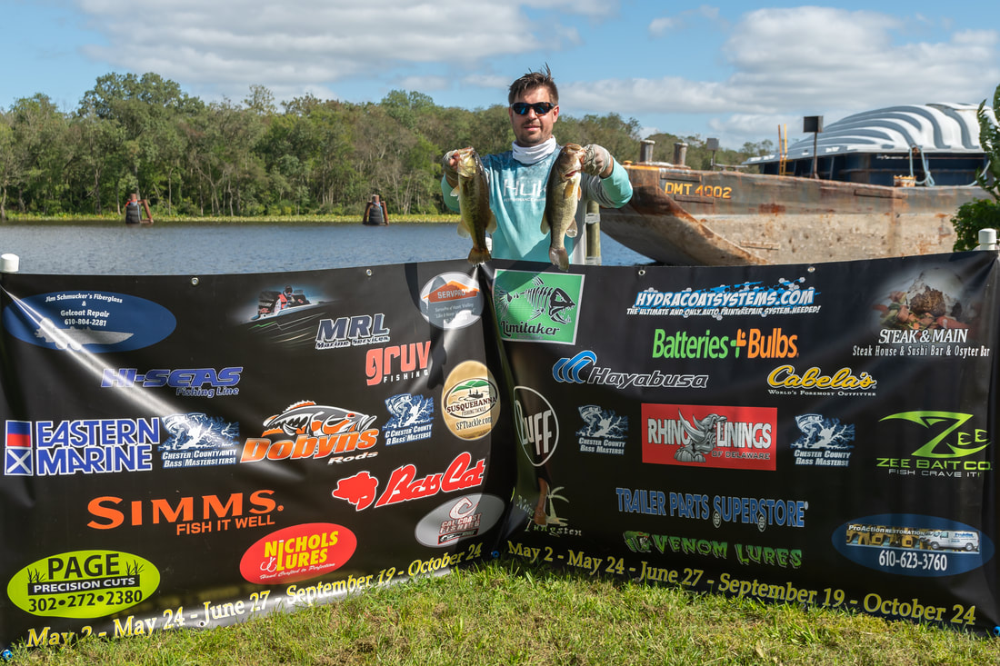
Mark Ely has fished this season in a limited fashion but is making the most of his time on the water. The 3-time AOY ends the day with a second place finish to add to an early season win. Mark's bag weighs in at 9.96 lbs and gives him good points that he will carry into his AOY point total for the 2020 season.
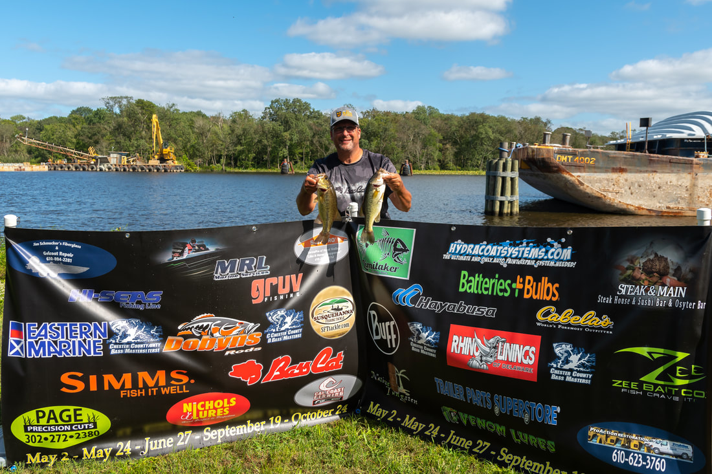
To say Tom Wood was on the fish is an understatement. He and his rider take 1st and 3rd place on this day, culling multiple times. They were obviously around them and throwing the right baits.
This 3rd place finish gives him his 2nd top 3 of the year. His bag weighs in at 8.90 lbs.
September 12, 2020
Nanticoke River
- Lunker: TOM YAW 3.61 lbs
- Total Anglers: 23
- Total Fish Weight: 105.61
- Total Fish Weighed: 68
- Average Fish Weight: 1.55
- Average Wgt./Participant: 4.59
CCBM Tournament #8
September 26, 2020- Conowingo Reservoir
On a day that looked to be so promising due to weather conditions (foggy and rainy weather and clear water ), most found out how tough the Conowingo can be. Usually you have to deal with debris or fast moving water but this time stable weather caused the tough condition. Due to no rain for weeks the water level was low and they were not running any water.
This did not stop one of our guys from finding some good fish, one angler breaks his new boat in right and another makes it 2 in a row in the top 3.
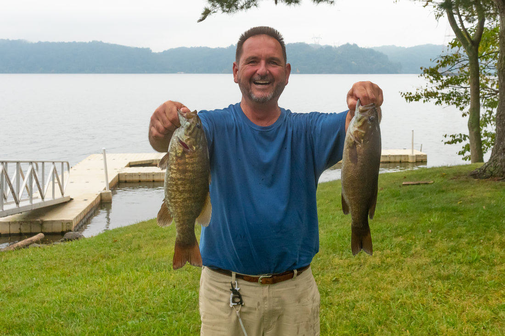
Paul Sirochman joins the club and is given the name "Mr Conowingo" and for good reason. He makes it back-to-back wins on this body of water.
He took advantage of a late bite to take the win. His bag of 4 Smallies weigh in at 8.16 lbs and moves him into 2nd place in the AOY race with 2 tx's to go.
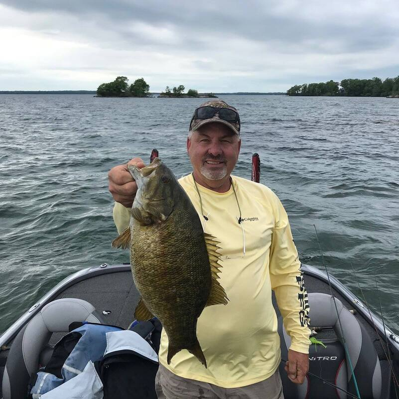
Ken Jester uses his new boat to land a nice limit on the Conowingo. Ken's 2nd place bag weighs in at 7.27lbs. Ken will be looking to add to his winning streak at our next tx on the Nanticoke River!
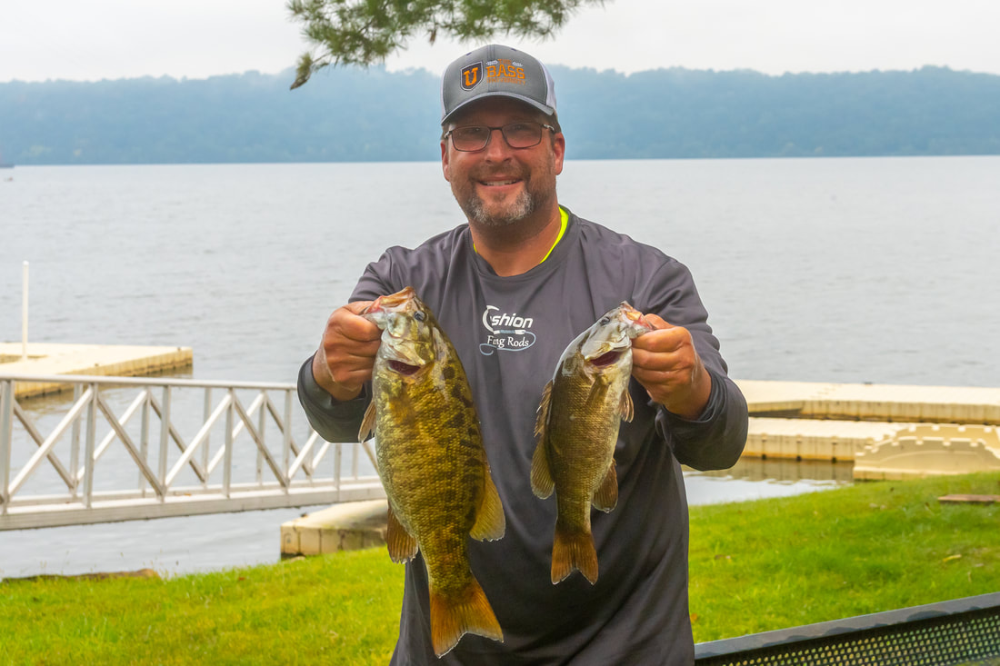
Tom Wood is on a roll with back-to-back top 3 finishes, showing all that he can catch Smallies as well as Nanticoke Bass. Tom's limit weighed in at 7.25 lbs. That's just.02 lbs behind Ken for 2nd. Tom may have missed out on 2nd place money but pockets Lunker cash for a 3 lb Smallie he weighed in.
September 26, 2020
Conowingo
- Lunker: TOM WOOD 3.0 lbs
- Total Anglers: 23
- Total Fish Weight: 69.90
- Total Fish Weighed: 43
- Average Fish Weight: 1..63
- Average Wgt./Participant: 1.87
CCBM Tournament #9
October 10, 2020- Nanticoke River
After our next to last tx for the crazy 2020 season, we have almost nothing settled. We know the top 2 anglers(Stan Horne, and Paul Sirochman) are in play for AOY, with Stan holding a 17 point lead. Sean Geerlof, in 3rd right now, can move up to 2nd with a good showing in the Club Classic Tx but can also be knocked to 4th with a big move from Tom Yaw. Tom can move up to a 2nd place finish in AOY standings with a win if Paul and Sean do not upgrade their points. 12 AOY points separate 4th place through 9th place. We also have 16 anglers that have a shot to find themselves in the top 6.
Rider of the year is a tight race as well; 5 anglers in the hunt. Right now Steve Manista (last year's ROY) has the edge with a 7 pt lead over Tom Yaw and his 2 Tx wins. Behind them are 3 other anglers (JC Henry, Ryan Sweeney, and Jim Pitcherello) who are looking to play spoiler. It is very possible that we get not 1, not 2, but possibly 3 riders in the top 6!!!!
Rookie of the year is a Lock for Paul Sirochman who has joined as a boater and taken 2 wins and a 2nd place finish this year.
Now, on to the results of the 9th tx of the season where one angler continues to bless his new boat with top 3 finishes. Another angler locks up a top 2 finish in the AOY race with a 2nd place finish. The 2019 AOY is on his way to finish strong after taking 3rd place.
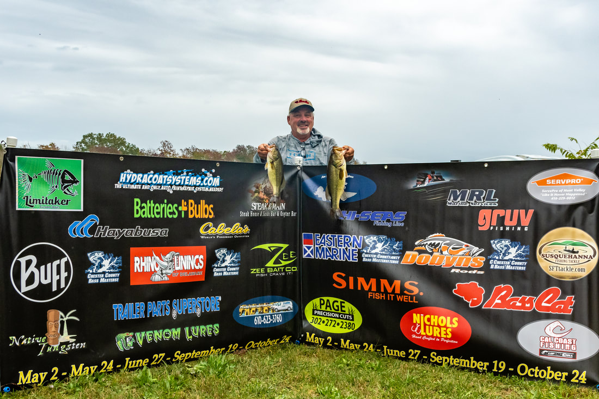
Ken Jester has been on the fish ever since upgrading to a New to him Bass Cat Lynx!! This is his 2nd top 3 finish with a WIN this time as a kicker. Kens bag weighs in at 10.29 lbs which included a 3.51 lb Lunker fish!
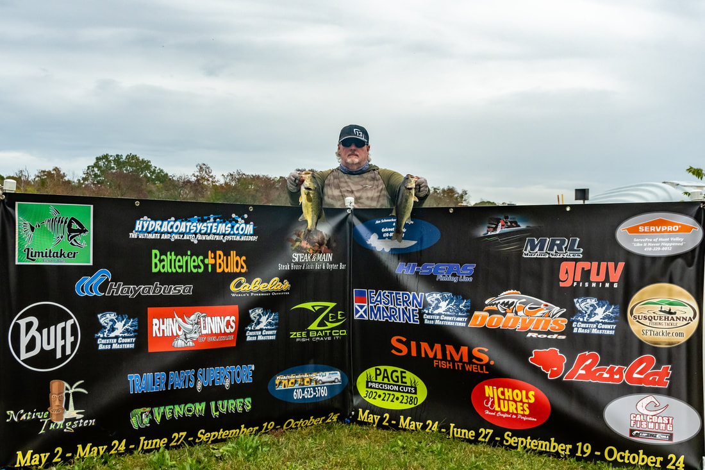
Stan Horne continues his great season and puts himself in great position to take home his 2nd AOY award in CCBM. Stan's bag of Nanticoke Largemouth weigh in at 8.30 lbs which included a 2.25 lb kicker fish which gives Stan 2nd place over the 3rd place angler that weighed the same exact weight. Tiebreaker rules on same weight bags are broken using number of fish and biggest fish.
If Stan comes in 14th place or better in our 2 day Club Classic he will be our 2020 AOY !!!
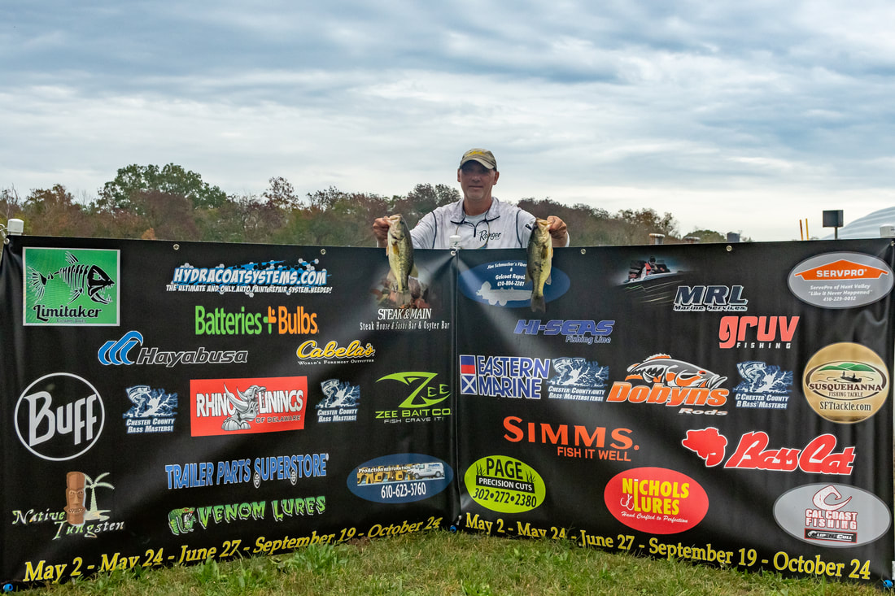
Our 2019 AOY Lou Croce was not having the year he wanted but is finishing strong on the leadup to our Club Classic where he has himself 6 wins in the last 11 years and won the last 2 in a row. Louie's bag weighs in at the same weight as 2nd place but lacked a big fish. His limit weighs in at 8.30 lbs.
October 10, 2020
Nanticoke River
- Lunker: KEN JESTER 3.51 lbs
- Total Anglers: 24
- Total Fish Weight: 97.68
- Total Fish Weighed: 62
- Average Fish Weight: 1.58
- Average Wgt./Participant: 4.07
CCBM Tournament #10
November 7-8th, 2020
Nanticoke River Day 1
Sassafras River Day 2
Chester County Bass Masters held their 10th and final club tournament of the shortened season November 7th and 8th on the Nanticoke River out of Seaford, Delaware and the Sassafras River out of Georgetown , Maryland.
It was a 2-day, combined weight tournament.
Weather was more like spring than late fall with a low around 50, bright sunshine and a high for both days around 72.
No wind, the only drawback was dense fog with about 100 yards visibility both mornings until around 8:00. Launch was on time, but idle speed only until the fog lifted.
22 club members fished the tournament. The club launched at 6:00 and the TX ended at 2:00 both days. 19 members weighed in fish.
Only 1 angler was able to weigh in a 5 fish limit each day.
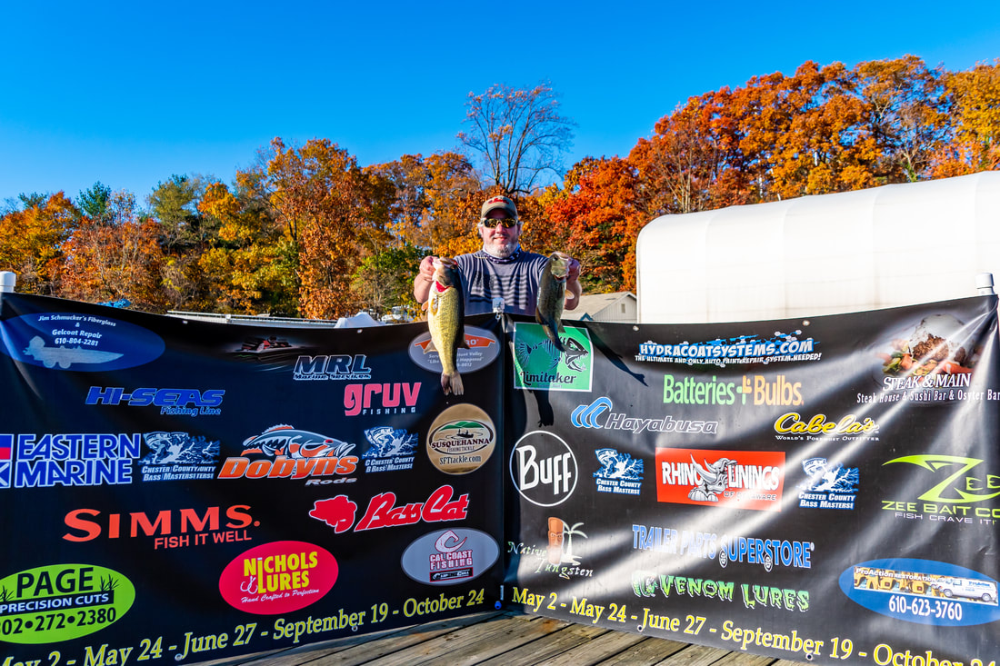
Sean Geerlof won the CCBM 2 day Classic TX with a limit of bass each day.
Day 1, Saturday, he was able to find 5 keepers on the Nanticoke. His bag weighed in at 6.43 lbs putting him in 4th place heading into day 2.
Sean had located some decent fish in practice on the Sassafras and for Day 2 they showed up for him as he brought in a 5 fish limit for 17.23 Lbs..
Sean's 2-day total weight came in at 23.66 Lbs.
Included in that sack was the Tournament Lunker, an impressive 5.89 Sass warthog that also won him the club's Rolling Lunker pot.
The win vaulted Sean into the # 2 spot in the final CCBM Angler of the Year standings for the 6 man team.
Congrats to Sean on fantastic day !
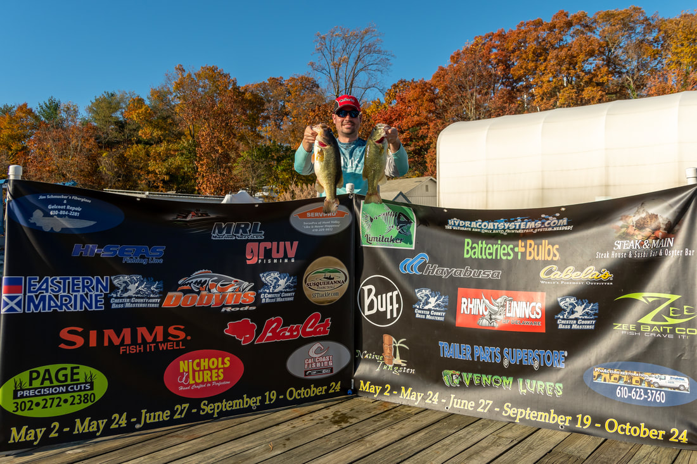
Second place went to Mark Ely. He weighed in 2 fish for 3.80 pounds on day 1 on the Nanticoke putting him in the 11 hole going to the Sass for Day 2.
Mark had located some nice bass in practice on the Sass and he was able to put them in the boat to the tune of 17.51 lbs on Sunday.
The top Sass bag pushed his total weight for the TX to 21.31 Lbs.
Mark also took the TX's 3rd Lunker with a 5.22 Trash Panda.
Congrats on a nice comeback for day 2 !
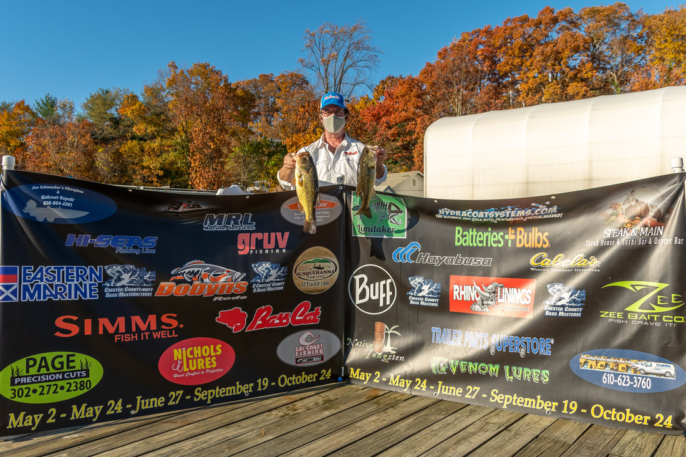
Third place was taken by Steve Weimar. He had 3 fish for 5.02 Lbs. on Saturday on the Nanticoke, putting him in 9th position heading into day 2.
Sunday on the Sass saw Steve and his co angler Steve Manista on a load of fish, with Steve Weimar bringing
in a nice limit of bass pushing the scales to 14.39 pounds.
Stephen's limit brought his total TX weight to 19.41 Pounds.
The Third place Classic finish pushed Steve up the final CCBM AOY standings to the 5th spot on the 6 man team.
Congrats on a great finish !
Classic Lunker winners!!!
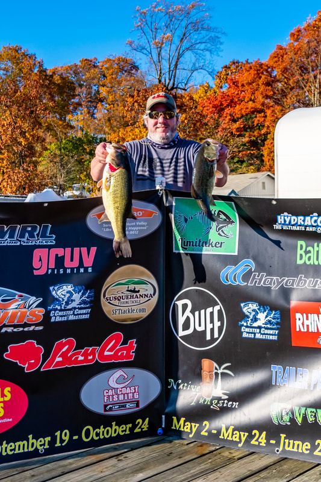
Sean Geerlof - 5.89 Lbs
Sassafras River Lunker
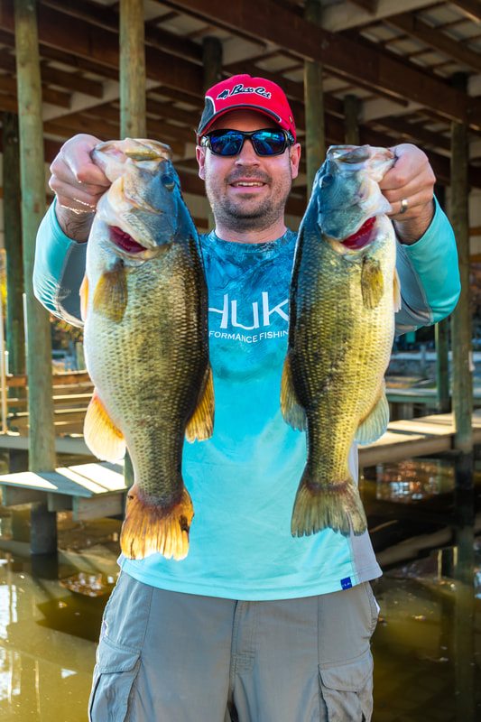
Mark Ely - 5.22 Lbs
3rd Lunker Sassafras River
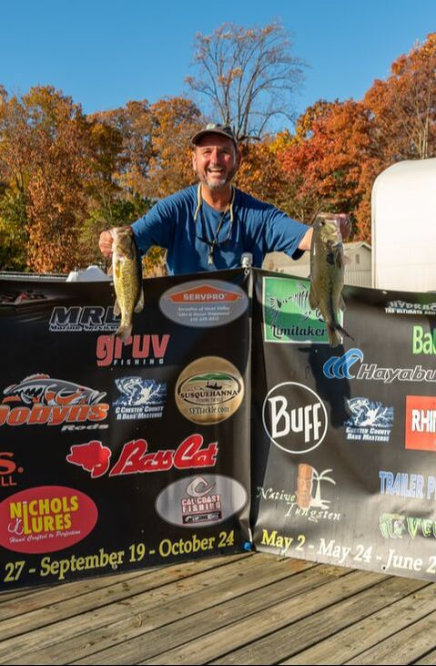
Paul Sirochman- 4.72 Lbs
4th Lunker Sassafras River
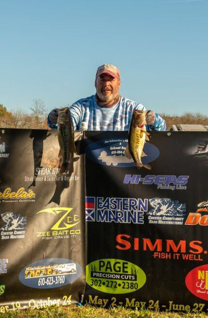
Woo Hauck- 3.03 Lbs
Nanticoke River Lunker
Final Results
Taken from the old club site as it stood on November 20, 2026 (2020-club-results.html).